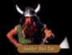

| MAC MORDAIN CADAL - Chapters 1, 2, 3, and 6 |
| UPPER LEVEL |
| ENTER | EXIT |
|
A sulphurous stench was in the wind. "This must be the Mac Mordain Cadal," Locklear said, his eyes glazing as he lost himself in thought. "I knew that it was somewhere close. As I recall Mac is dwarven for mine or cave or something like that. Now considering the dwarves are no friends of the moredhel, they might be of some assistance to us, assuming they don't take exception to Gorath here. Do we investigate or not?" YES: The tunnels were damp. Though the silver seamed earthen roof which stretched over their heads was tall enough that they didn't have to crouch, Locklear felt hemmed in by the shaft. He was privately thankful the dwarves were larger than they were often given credit for in the legends.
|
Daylight filtered in from above. "This will be the way back to the main road, south of La Mut," Owyn said. "Do you think we should leave?" YES: Light guided them. Following the ascending shaft of the Mac Mordain Cadal into daylight, they emerged at last on a road leading to the east and the King's Highway.
|
Meet: NADDUR BAN DOK
| BRAK NURR | ||
|
The ground shook. Startled, Locklear braced himself against the earthen wall of the mine, his wide eyes fixed on the titanic creature that lumbered towards them. "The Brak Nurr." Glancing over his shoulder at Owyn, Locklear sighed. "This is going to be harder than I thought."
|
They hadn't been seen. Charging forward into the murky darkness Locklear finally caught sight of the creature and gasped at the size of it. Glancing over his shoulder at Owyn, he sighed. "This is going to be harder than I thought."
|
The ground shook. Somehow, the Brak Nurr had sensed their approach and was lumbering towards them. Startled, Locklear braced himself, his wide eyes fixed on the titanic creature. Glancing over his shoulder he gulped. "This is going to be harder than I thought." |
| CHAPTER 1: BARRIER |
|
Someone ahead shouted. Hurrying down the corridor to see what the cause of the commotion was, Locklear was halted by an angry looking dwarf. "Na further, lad!" the dwarf drawled. "I don't care what Naddur may or may not 'ave told you about what is going on down 'ere. We've enough ta do ta clear out this mess without yar interferin'. Now go back the way ya come and let us get about our work." When the dwarf couldn't be reasoned with, Locklear loped back down the corridor.
|
"Well," inquired Gorath. "Shall we?"
YES:
They descended noisily.
Several times Owyn nearly lost his footing on the mossy steps, but fortunately caught himself
before sending them all tumbling down the dwarven stairwell.
At last, they emerged into a large corridor...
It was definitely a way up, but he questioned whether it was the right way for them to be
going at the moment. "What do you think, Owyn?" he asked. Feel like climbing all that way
back up?"
YES:
Owyn nearly broke his neck.
Less footsure than Gorath and further encumbered by his bulky staff, it was a constant struggle
for him to keep upright as they wound up the mossy steps of the dwarven mine. When they reached
level ground once again, he resisted the urge to drop and kiss the dirt...
Gorath put a hand on his sword, but the creature seemed unarmed, so after a moment
he relaxed his grip.
In broken kingdom tongue the Kobold began to speak to them of Rhuargh, the
dragon who had once inhabited the mines. Convinced the dwarves were somehow
responsible for the dragon's disappearance they had decided to bribe King
Dolgan into freeing it.
"Bring us... armor... Grey Tower Plate..." croaked the Kobold.
With out another word the creature slipped back into the darkness of the pit.
James considered the question for a moment, unsure how to answer.
The kobold considered this for a moment, then turned to the pit and made some
signalling motions with his hands, while shouting instructions in a language James
didn't understand.
After close to an hour, a strange looking metallic goblet was brought to the
surface by several young kobolds, who held it reverently as if it possessed
incredible value.
James placed the Grey Tower Plate on the floor of the mine near the pit, and
stepped back so it could be inspected. Apparently satisfied with their offer,
the kobolds motioned them forward, that they might sip from the goblet.
Owyn was first. He let the cool liquid trickle into his mouth from the cup. Almost
immediately he felt a new sense of strength and vitality; it began in his mouth
and chest then radiated away from these areas like ripples on a still pond.
The kobolds gave a sip to everyone, then climbed back into the darkness of the
pit.
Considering the trouble they had gone through to get the dwarven armor, he
wasn't quite prepared to simply give it away, despite the tempting offer that
the kobolds had made. "We haven't found it as yet," he lied. "We will make
certain to return it to you if we do find it."
Hurrying down the corridor to see what the cause of the commotion was, Locklear was
halted by an angry-looking dwarf.
"No further, lad!" the dwarf drawled. "We've not cleared out the way to the lower caverns
as yet and there's a danger of another collapse. Turn round and leave us to our work."
When Locklear realized the dwarf couldn't be reasoned with, they loped back down the low
ceilinged corridor.
Soon the corridor made an abrupt turn, ending in a mass of broken crossbeams, earth and
crumbled masonwork. "Cave in," James pondered aloud. "We'll have to go another way."
Turning round, the party ventured back up the corridor, down which they had come.
"This must be the passage to Elvandar," noted Gorath. "If we go this way, it may take us a
few hours to get to the end. Are we up to the climb right now?"
YES:
Hours passed.
Just as Owyn was beginning to wonder if they would ever see the light of day
again, the walls of the stairwell widened and were illuminated by dim shafts of light
piercing the darkness through an oaken door. Pushing it open, Owyn gasped at the marvel
of the leafy canopy which spread above them...
"Apparently we're back at the Mac Mordain Cadal," Owyn said. "Any reason you can think of to go
back down there?"
YES:
The tunnels were damp.
Though the silver seamed, earthen roof which stretched over their heads was tall enough that
they didn't have to crouch, Owyn felt hemmed in by the shaft, privately thankful the dwarves
were larger than they were often given credit for in the legends.
LOWER LEVEL
ENTER (from Upper Level)
EXIT (to Upper Level)
The stairwell spiralled downward.
Gorath looked up the narrow stairwell.
KOBOLDS - FIRST VISIT (without Grey Tower Plate)
A Kobold climbed, grunting, from the pit.
KOBOLDS - SECOND VISIT (with Grey Tower Plate)
"We would have...Grey Tower Plate," croaked the Kobold. "Have you... of what...
we speak?
YES
NO
James nodded. "Yes, we do," he said slowly. "What would we profit of letting you
have it?"
James shook his head.
CHAPTER 2: BARRIER
Someone ahead shouted.
CHAPTER 3: BARRIER
The walls narrowed slightly.
TOMBSTONE IN "RHUARGH'S ROOM"
Death will come quickly to those who trespass here. Leave now, or your suffering
will be a thousand times worse than that of the one now buried beneath this
marker.
CHAPTER 6
EXIT (to Zone 8: Caldara)
ENTER (from Zone 8: Caldara)
A long corridor stretched before them.
A sulphurous stench was in the wind.